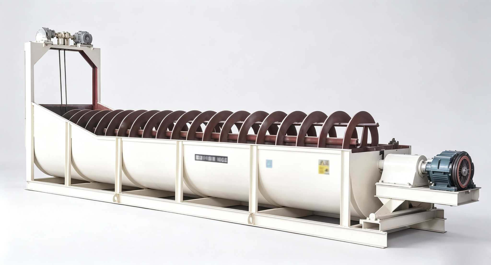

Wet classification equipment based on gravity sedimentation principle. Flexible configuration of high weir and immersed types, single and double spirals. The core partner for closed-circuit grinding classification. The improved model features automatic sand return lifting device, saving 1-1.5 kWh per ton of ore.

The Spiral Classifier is a mechanical classification equipment based on mineral particle density differences, widely used in mining, metallurgy, chemical and other industries. Through the rotating motion of spiral blades, the ground pulp is separated into coarse sand (return sand) and overflow (fines) by size or density. Four types are produced: high weir single/double spiral and immersed single/double spiral. Single spiral includes standard and improved models. The improved model adds an automatic lifting device at the return sand end, lifting the sand discharged from the tank bottom to a suitable position on the tank wall for discharge, adapting to the mill without the large scoop configuration — saving 1-1.5 kWh per ton of ore, while avoiding frequent scoop sand maintenance and reducing wear on the ball mill's large and small gears.
Pulp discharged from the mill enters the inclined tank through the feed port. The tank inclination is usually 14°-18°. Pulp flows downward along the tank bottom under gravity.
Coarse particles settle quickly to the tank bottom due to higher density, while fine particles suspend in the upper pulp. The tank inclination angle and overflow weir height together control the settling area and classification size.
Rotating spiral blades push the coarse sand settled at the tank bottom upward to the return sand port, sending it back to the mill for regrinding. The spiral rotates at low speed (2-15.5 r/min) to avoid disturbing sedimentation.
Fine particles overflow from the overflow weir with the upper pulp, entering the next process stage (flotation/magnetic separation). High weir type: overflow weir is above the spiral center. Immersed type: spiral blades are fully submerged below the overflow surface.
| Model | Type | Spiral Diameter (mm) | Spiral Speed (r/min) | Tank Size (mm) | Production Capacity (t/d) | Motor Power (kW) | Weight (t) |
|---|---|---|---|---|---|---|---|
| High Weir Single Spiral | |||||||
| FLG-5 | High Weir Single | 500 | 8.5-15.5 | 4500×555 | 143-261 | 1.1 | 1.6 |
| FLG-7 | High Weir Single | 750 | 4.5-9.9 | 5500×830 | 256-564 | 3 | 2.9 |
| FLG-10 | High Weir Single | 1000 | 3.6-7.6 | 6500×1112 | 473-1026 | 5.5 | 4.4 |
| FLG-12 | High Weir Single | 1200 | 6 | 6500×1372 | 1170-1600 | 5.5 | 9.4 |
| FLG-15 | High Weir Single | 1500 | 2.5-6 | 8400×1664 | 1140-2740 | 7.5 | 11.7 |
| FLG-20 | High Weir Single | 2000 | 3.6-5.5 | 8400×2200 | 3890-5940 | 11/15 | 21.5 |
| FLG-24 | High Weir Single | 2400 | 3-5 | 10500×2600 | 6800 | 22 | 33.5 |
| FLG-30 | High Weir Single | 3000 | 2-4 | 12500×3200 | 11650 | 30 | 37 |
| High Weir Double Spiral | |||||||
| 2FLG-12 | High Weir Double | 1200 | 6 | 6500×2600 | 2340-3200 | 5.5×2 | 15.8 |
| 2FLG-15 | High Weir Double | 1500 | 2.5-6 | 8400×3200 | 2800-5480 | 7.5×4 | 22.1 |
| 2FLG-20 | High Weir Double | 2000 | 3.6-5.5 | 8400×4280 | 7780-11880 | 15×2 | 36.4 |
| 2FLG-24 | High Weir Double | 2400 | 3.67 | 9500×5100 | 13600 | 18.5×2 | 48.9 |
| 2FLG-30 | High Weir Double | 3000 | 3.2 | 12500×6300 | 23300 | 30×2 | 73.0 |
| Immersed Single Spiral | |||||||
| FLC-10 | Immersed Single | 1000 | 6-7.4 | 8400×1112 | 473-1026 | 5.5 | 6.0 |
| FLC-12 | Immersed Single | 1200 | 5-7 | 8400×1372 | 1170-1630 | 7.5 | 11.0 |
| FLC-15 | Immersed Single | 1500 | 2.5-6 | 10500×1664 | 1140-2740 | 7.5 | 15.3 |
| FLC-20 | Immersed Single | 2000 | 3.6-5.5 | 11500×2200 | 3890-5940 | 11/15 | 29.1 |
| FLC-24 | Immersed Single | 2400 | 3.64 | 10500×2600 | 6800 | 22 | 35.3 |
| FLC-30 | Immersed Single | 3000 | 3.2 | 14300×3200 | 11650 | 30 | 43.5 |
| Immersed Double Spiral | |||||||
| 2FLC-12 | Immersed Double | 1200 | 6 | 8400×2600 | 1770-2800 | 7.5×2 | 19.6 |
| 2FLC-15 | Immersed Double | 1500 | 2.5-6 | 10500×3200 | 2280-5480 | 11×2 | 27.5 |
| 2FLC-20 | Immersed Double | 2000 | 3.6-5.5 | 12900×4280 | 7780-11880 | 15×2 | -- |
| 2FLC-24 | Immersed Double | 2400 | 3.67 | 11130×5100 | 13700 | 37×2 | 65.3 |
| 2FLC-30 | Immersed Double | 3000 | 3.2 | 14300×6300 | 23300 | 45×2 | 84.9 |
※ Classifier available in standard type and improved type with automatic sand return lifting device. Technical data subject to change without notice.
| Component | Function | Material / Features |
|---|---|---|
| Spiral Body | Composed of spiral shaft and spiral blades. Rotates to push settled sand upward along the tank bottom to the return sand port. | Wear-resistant cast iron sleeve welded blades, spiral shaft seamless steel pipe |
| Tank Body | Inclined steel plate welded structure. Pulp completes sedimentation and separation inside the tank. | Q235 Steel Plate Welded, Inclination 14°-18° |
| Drive Device | Motor drives the spiral shaft to rotate, controlling spiral speed to adjust classification effect. | Motor + Reducer + Large & Small Gears |
| Lifting Device | Located at the return sand end. The improved model is equipped with electric/manual lifting mechanism to adjust spiral height. | Electric Lifting Motor / Manual Worm Gear |
| Overflow Weir | Controls the overflow surface height, adjusting the settling area to control overflow particle size and concentration. | Adjustable Weir Plate, Steel + Rubber Seal |
| Automatic Sand Return Lifting Device | Unique to the improved model. Lifts sand from the tank bottom to a suitable position on the tank wall for discharge. | Bucket Lifting Mechanism, Wear-resistant Alloy Liner |
| Upper and Lower Bearings | Supports both ends of the spiral shaft, bearing axial thrust and radial load. | Plain Bearing, Forced Circulation Lubrication |
High weir (FLG) suitable for coarse classification, overflow size ≥0.15mm. Immersed (FLC) has larger settling area, overflow size up to 0.07mm. Choose as needed to flexibly match grinding fineness requirements.
No complex hydraulic or pneumatic systems, pure mechanical transmission. Steel plate welded tank, replaceable spiral blades. Minimal daily maintenance, suitable for continuous operation in remote mines.
The improved model adds an automatic sand return lifting device, adapting to the mill without the large scoop configuration, saving 1-1.5 kWh per ton of ore while avoiding frequent scoop sand maintenance and reducing overall operation costs.
Inclined installation enables gravity pulp flow without additional pumping. Forms a closed-circuit grinding system with the ball mill — return sand automatically goes back to the mill, overflow directly enters the next separation stage.
Single spiral meets small-medium scale plants; double spiral doubles capacity (up to 23,300 t/d), matching large mills. Four combinations cover the full φ500-3000mm specification range.
Not only for grinding classification, but also for ore washing de-sliming, dewatering, medium removal, etc. Best classification effect at pulp concentration 18-25%, suitable for various mineral types and process conditions.
Forms a closed circuit with the ball mill — return sand automatically goes back to the mill, overflow enters flotation or magnetic separation. High weir type for primary grinding, immersed type for secondary fine grinding — the classic configuration for concentrator classification operations.
Uses gravity sedimentation to separate mud and fine clay from ore surfaces, improving mill feed grade. Especially suitable for pretreatment of high-clay oxide ores and weathered ores.
Provides properly sized material for gravity separation equipment such as shaking tables and jigs. An indispensable supporting equipment in tungsten, tin, gold and other gravity separation processes.
Quartz sand classification, chemical raw material particle size classification, hydrometallurgical intermediate product separation. Low-speed operation, minimal equipment wear, suitable for continuous industrial production.
Interested in Spiral Classifier? Contact us now for a quote and solution